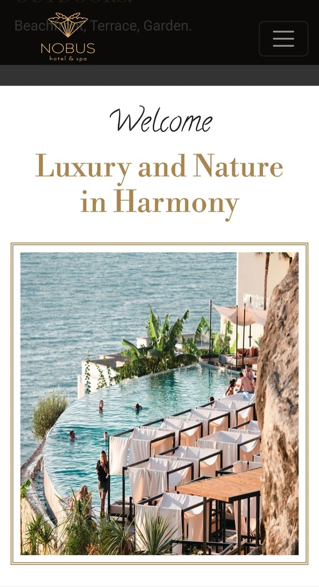
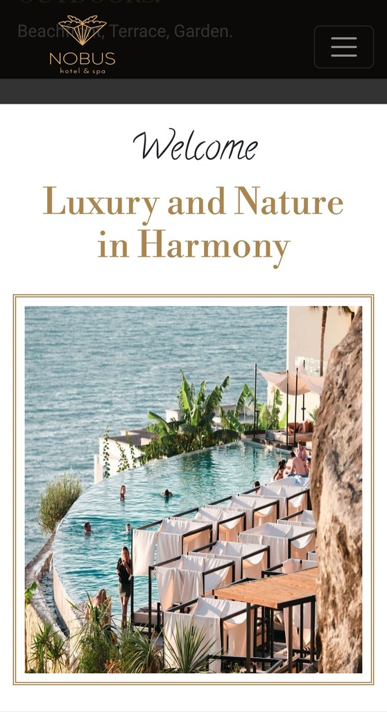
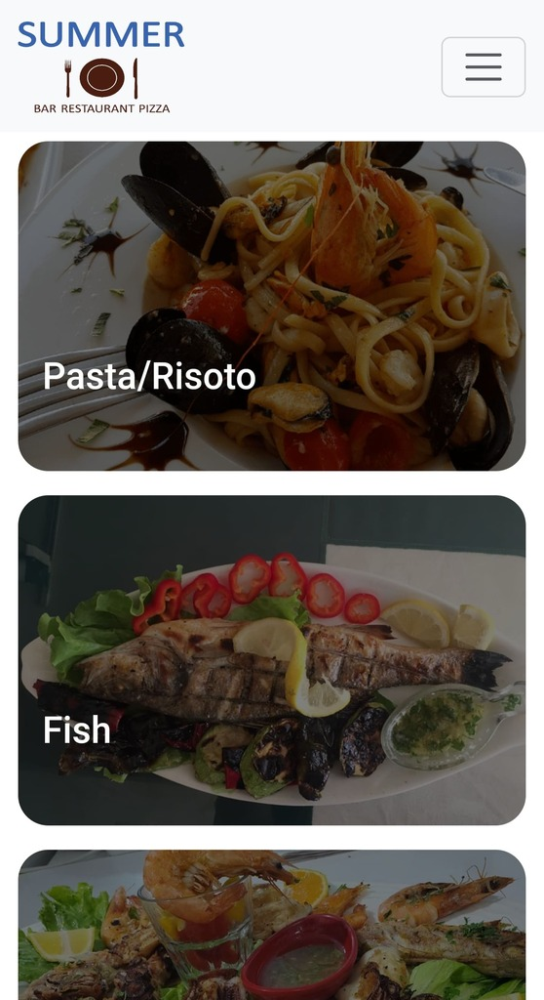
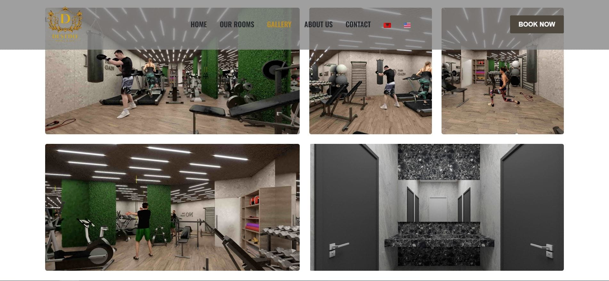
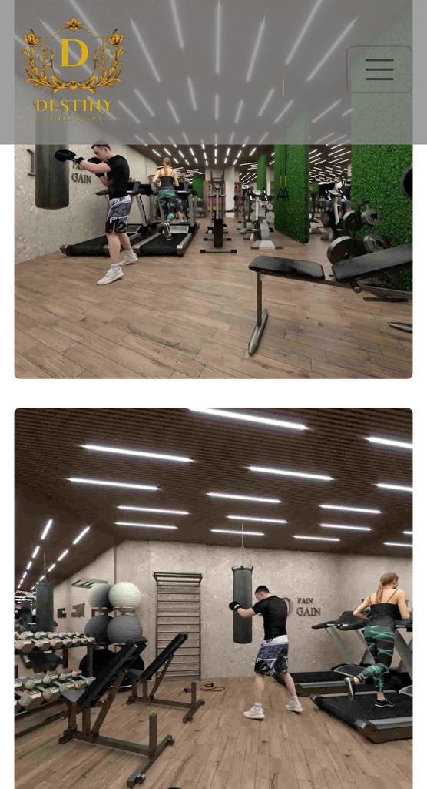
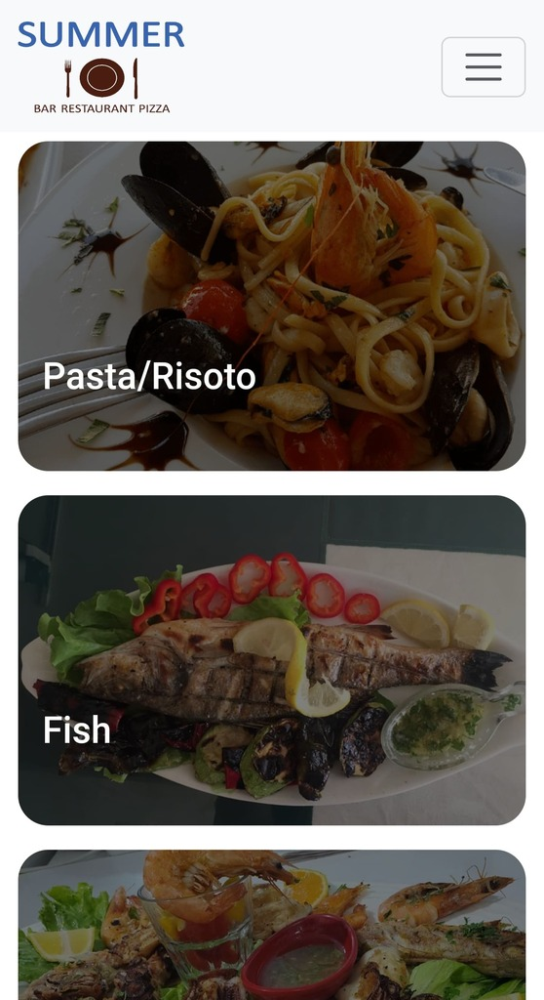
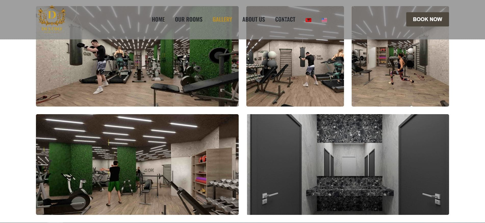
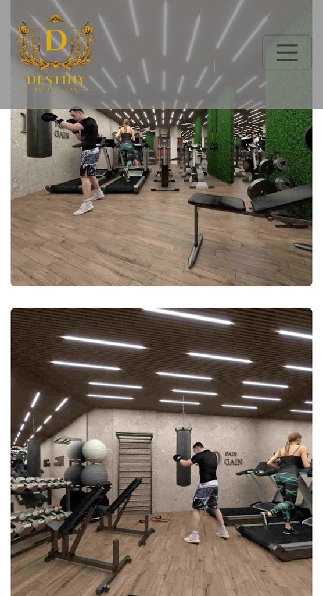

Data Engineering
Building dashboards using visualization tools and optimizing queries to help businesses unlock insights from their data.
I am Xhulio Veizaj, a Data Engineer in Tirana. Proficient in Software Engineering and Web Development, I can make your business visible to potential clients. Through my experience as a Data Engineer and Front-End Developer, I have gained the skills needed to implement complex programs, analyze and visualize data, and build responsive websites or web applications. Skilled in a variety of programming languages and other technologies and constantly looking to learn something new. I'm always open to new opportunities to learn and collaborate with others so feel free to reach out to me.
Contact Me Download My CVWorking accress different fields of technology, I have built several projects. With over 35 responsive websites build for businesses like hotels, car rentals, restaurants, jewlries, hairdressers and many more, working with both Albanian and Italian businesses. I have made projects with AI for real-time detection, set up applications with optimized databases, and even managed ubuntu servers, configuring them to host websites and web applications.
Gitbuh ProfileI have developed websites for sereval businesses, throughout Tirana, Albania and not only. I have always made sure that the websites developed by me are optimized to perfection. Doing everything possible from compressing images and optimizing content to changing server configurations and setting up caching. Every website I made has been taken care with passion, going as far as to create logos or edit pictures myself to fit the theme of the business.
 

 





I am someone who writes scripts for fun, so when it comes to building software you know who you should come to. If I am going to use something frequently, I might as well make it myself. Some of my projects include an AI application using YOLO for real-time detection, a web application for writing blogs, personal finance tracking apps, building REST APIs and even some game development in Unity.
An AI-powered application built with Flask and YOLO for real-time threat detection on farms, helping farmers increase security and automate monitoring.
A collection of utilities including an automatic website translator using Google Translate API, and a website checker that verifies uptime and sends instant alerts if sites go offline.
A set of REST APIs developed with Java Spring Boot for managing businesses, including employees, clients, invoices, and payments, ensuring scalability and reliability.
April 2024 - Present
June 2024 - Present
July 2023 - October 2023
2021 - 2024
I'm a Software & Data Engineer based in Tirana. Whether you have a project idea, need help with a website, or want insights from your data, feel free to reach out. I am always open to collaborating on web development, software engineering, data analysis, and system administration projects. Let's create something amazing together!
You can contact me for freelance projects, website maintenance, collaborations, or other professional inquiries. I respond quickly and am excited to help bring your ideas to life.